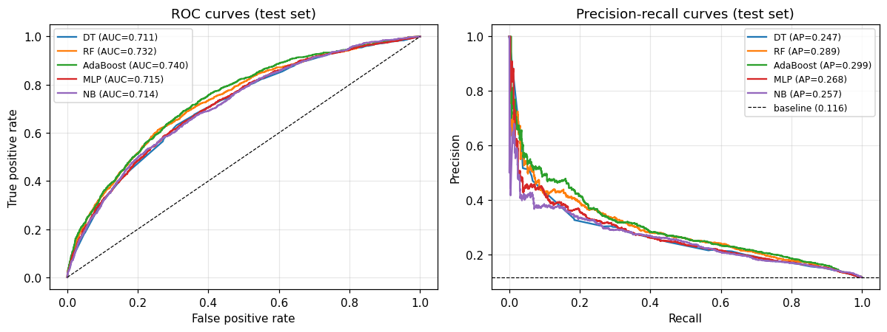

Ensembles beat the single tree, and the gap is real
Random Forest and AdaBoost improved on the tuned Decision Tree by 0.027 and 0.031 AUC in cross-validation (Wilcoxon p = 0.002 for both). The Friedman test rejected equal performance across all five models (p = 2.7×10⁻⁷). AdaBoost was chosen on cross-validated AUC, fixed in advance, and never on test results.
